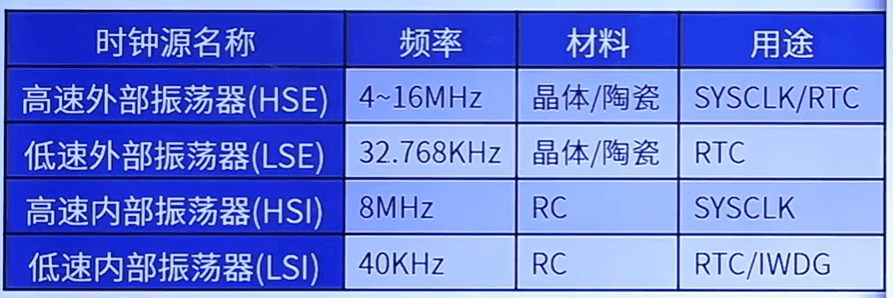
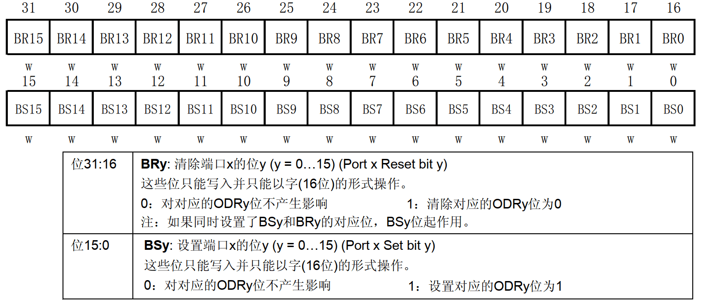
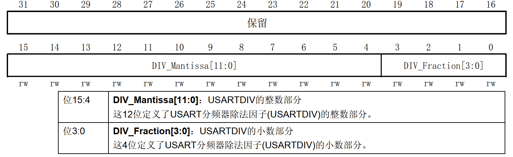
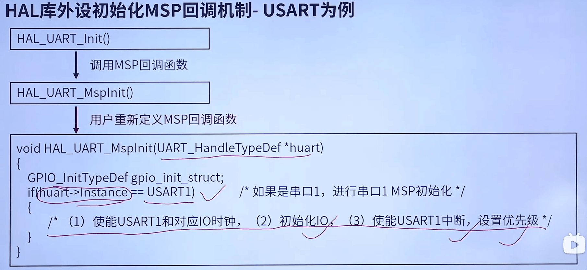

STM32
STM32系统框架图
内核和芯片
F1系统架构
F1系统架构主要可以分为4个主动单元和4个被动单元（主动单元向被动单元发送指令）
| 主动单元 | 被动单元 |
|---|---|
| Cortex M3内核DCode总线(D-Bus) | 内部FLASH |
| Cortex M3内核 系统总线（S-Bus） | 内部SRAM |
| 通用DMA1 | FSMC |
| 通用DMA2 | AHB到APB的桥，它连接所有的APB外设 |
- AHB：高级高性能总线
- APB: 高级外围总线
F1系统架构图参考文档《STM32F103x6.pdf》第11页，简图参考《STM32F10xxx中文参考手册.pdf》第25页
STM32的寻址范围
想要解答这个问题,我们需要清楚以下两点:
- 32位的单片机可以有32根地址线(每根地址线有两种状态:导通或不导通)
- 单片机内存地址访问的存储单元是按字节编址的(而不是bit)
STM32寻址大小: 232=4G (字节) STM32寻址范围: 0x0000 0000 ~ 0xFFFF FFFF
存储器映射
存储器指可以存储数据的设备,本身没有地址信息,对存储器分配地址的过程称为存储器映射
STM32F103存储器映射图参考《STM32F103 战舰开发指南V1.3.pdf》第71页
ST将4GB空间分成8个块
| 存储块 | 功能 | 地址范围 |
|---|---|---|
| Block 0 | Code | 0X0000 0000 ~ 0x1FFF FFFF（512MB） |
| Block 1 | SRAM | 0X2000 0000 ~ 0x3FFF FFFF（512MB） |
| Block 2 | 外设 | 0X4000 0000 ~ 0x5FFF FFFF（512MB） |
| Block 3 | FSMC Bank1&2 | 0X6000 0000 ~ 0x7FFF FFFF（512MB） |
| Block 4 | FSMC Bank3&4 | 0X8000 0000 ~ 0x9FFF FFFF（512MB） |
| Block 5 | FSMC 寄存器 | 0XA000 0000 ~ 0xBFFF FFFF（512MB） |
| Block 6 | 没用到 | 0XC000 0000 ~ 0xDFFF FFFF（512MB） |
| Block 7 | Cortex M3 内部外设 | 0XE000 0000 ~ 0xFFFF FFFF（512MB） |
寄存器映射
寄存器是单片机内部一种特殊的内存,可以实现对单片机各个功能的控制
简单来说:寄存器就是单片机内部的控制机构
详情参考《STM32F103 战舰开发指南V1.3.pdf》第5.3.4小节
STM32CubeMX
新建工程参考《STM32F103 战舰开发指南V1.3.pdf》第10.3小节
STM32时钟系统
认识时钟树


配置系统时钟
配置步骤：
- 配置HSE_VALUE 告诉HAL库外部晶振频率, stm32xxxx_hal_conf.h
-
调用Systemlnit()函数（可选） 在启动文件中调用,在system_stm32xxxx.c定义
-
选择时钟源，配置PLL 通过HAL_RCC_OscConfig()函数设置
-
选择系统时钟源，配置总线分频器 通过HAL_RCC_ClockConfig()函数设置
-
配置扩展外设时钟(可选)（H7） 通过HAL_RCCEx_PeriphCLKConfig()函数
3+4+5= sys_stm32_clock_init()
外设时钟使能和失能
我们要使用某个外设,必需先使能该外设时钟! ! !
HAL库使能某个外设时钟的方法,如:
HAL_RCC_GPIOA_CLK_ENABLE(); //使能GPIOA时钟
HAL库禁止某个外设时钟的方法,如:
HAL_RCC_GPIOA_CLK_DISABLE(); //禁止 GPIOA 时钟
HAL_RCC_OscConfig()函数
HAL_StatusTypeDef HAL_RCC_OscConfig(RCC_OsclnitTypeDef *RCC_OsclnitStruct)
typedef struct{
uint32_t OscillatorType; /* 选择需要配置的振荡器*/
uint32_t HSEState; /*HSE 状态*/
uint32_t HSEPredivValue; /* HSE 预分频值*/
uint32_t LSEState; /* LSE 状态*/
uint32_t HSIState; /* HIS 状态*/
uint32_t HSICalibrationValue; /* HIS校准值*/
uint32_t LSIState; /* LSI 状态*/
RCC_PLLInitTypeDef PLL; /* PLL锁相环体*/
}RCC_OsclnitTypeDef; //振荡器初始化结构体
typedef struct{
uint32_t PLLState; /* PLL 状态*/
uint32_t PLLSource; /* PLL 时钟源*/
uint32_t PLLMUL; /* PLL倍频系数*/
}RCC_PLLInitTypeDef;
HAL_RCC_ClockConfig()函数
HAL_StatusTypeDef HAL_RCC_ClockConfig(RCC_ClkInitTypeDef *RCC_ClkInitStruct, uint32_t FLatency)
typedef struct{
uint32_t ClockType; /*要配置的时钟(SYSCLK/HCLK/PCLK1/PCLK2) */
uint32_t SYSCLKSource; /* 系统时钟源*/
uint32_t AHBCLKDivider; /* AHB时钟预分频系数*/
uint32_t APB1CLKDivider /* APB1 时钟预分频系数*/
uint32_t APB2CLKDivider /* APB2 时钟预分频系数*/
}RCC_ClkInitTypeDef;
uint32_t FLatency
#define FLASH_LATENCY_0 0x00000000U //FLASH 0个等待周期
#define FLASH_LATENCY_2 FLASH_ACR_LATENCY_1 //FLASH 1个等待周期
#define FLASH_LATENCY_1 FLASH_ACR_LATENCY_O //FLASH 2个等待周期
F1的系统时钟为72MHz，FLASH时钟来源于F1的系统时钟，若FLASH工作时钟频率使用72MHz则会超频（超频最大25MHz），所以需要等。
实际设置FLASH_ACR寄存器LATENCY位域，请参考《STM32F10xxx闪存编程参考手册.pdf》3.1小节
GPIO
① 保护二极管
② 上拉、下拉电阻
③ 施密特触发器
④ P-MOS 管和 N-MOS 管
具体参考《STM32F103 战舰开发指南V1.3》第13.1小节
八种工作模式
| GPIO八种工作模式 | 特点及应用 |
|---|---|
| 输入浮空 | 输入用，完全浮空，状态不定 |
| 输入上拉 | 输入用，用内部上拉，默认是高电平 |
| 输入下拉 | 输入用，用内部下拉，默认是低电平 |
| 模拟功能 | ADC、DAC |
| 开漏输出 | 软件IIC的SDL、SCL等 |
| 推挽输出 | 驱动能力强, 25mA (max) ,通用输出 |
| 开漏式复用功能 | 片上外设功能(硬件IIC的SDL、引脚等) |
| 推挽式复用功能 | 片上外设功能(SPI的SCK、MISO、MOSI引脚等) |
1、输入浮空
上拉/下拉电阻为断开状态，施密特触发器打开，输出被禁止。 输入浮空模式下， IO 口的电平完全是由外部电路决定。如果 IO 引脚没有连接其他的设备，那么检测其输入电平是不确定的。该模式可以用于按键检测等场景。
2、输入上拉
上拉电阻导通，施密特触发器打开，输出被禁止。 在需要外部上拉电阻的时候，可以使用内部上拉电阻，这样可以节省一个外部电阻，但是内部上拉电阻的阻值较大，所以只是“弱上拉”，不适合做电流型驱动
3、输入下拉
下拉电阻导通，施密特触发器打开，输出被禁止。 在需要外部下拉电阻的时候，可以使用内部下拉电阻，这样可以节省一个外部电阻，但是内部下拉电阻的阻值较大，所以不适合做电流型驱动。
4、模拟功能
上下拉电阻断开，施密特触发器关闭，双 MOS 管也关闭。其他外设可以通过模拟通道输入输出。 该模式下需要用到芯片内部的模拟电路单元单元， 用于 ADC、 DAC、 MCO这类操作模拟信号的外设。
5、开漏输出
①上拉电阻关闭
②下拉电阻关闭
③施密特触发器打开
④P-MOS管始终不导通
⑤往ODR对应位写0，N-MOS管导通，写1则N-MOS管不导通
N-MOS管高电平导通，低电平关闭，P-MOS管则相反
特点：不能输出高电平，必须有外部（或内部）上拉才能输出高电平
6、推挽输出
①上拉电阻关闭
②下拉电阻关闭
③施密特触发器打开
④往ODR对应位写0，N-MOS管导通，写1则P-MOS管不导通
特点：可输出高低带电平，驱动能力强
7、开漏式复用功能
①上拉电阻关闭
②下拉电阻关闭
③施密特触发器打开
④ P-MOS管始终不导通
特点：
-
不能输出高电平，必须有外部（或内部）上拉才能输出高电平。
-
由其他外设控制输出。
8、推挽式复用功能
①上拉电阻关闭
②下拉电阻关闭
③施密特触发器打开
特点：
- 可输出高低带电平，驱动能力强
- 由其他外设控制输出。
F4/F7/H7系列和F1系列的GPIO差异点
- F1在输出模式,禁止使用内部上下拉 F4/F7/H7在输出模式,可以使用内部上下拉
- 不同系列IO翻转速度不同
GPIO寄存器
端口配置寄存器（GPIOx_CRL 和 GPIOx_CRH）
这两个寄存器都是 GPIO 口配置寄存器，不过 CRL 控制端口的低八位， CRH 控制端口的高八位。寄存器的作用是控制 GPIO 口的工作模式和工作速度。
每组 GPIO 下有 16 个 IO 口，一个寄存器共 32 位，每 4 个位控制 1 个 IO，所以才需要两个寄存器完成。
当MODE设置为00，CNF设置为10时。设置为上拉/下拉输入模式，具体是上拉还是下拉则需要设置ODR寄存器。
端口输出数据寄存器（ODR）
用于设置IO引脚输出的电平
端口置位/复位寄存器（BSRR）

用于间接写入ODR寄存器
- ODR和BSRR寄存器控制输出有什么区别？
ST官方给的答案：使用ODR，在读和修改访问之间产生中断时，可能会发生风险，BSRR则无风险。
BSRR VS ODR
ODR修改：读→改→写 BSRR修改：写
GPIO 端口输入数据寄存器（IDR）
用于判断IO引脚的电平
GPIO配置步骤
- 使能时钟 HAL_RCC_GPIOx_CLK_ENABLE()
- 设置工作模式 HAL_GPIO_Init()
- 设置输出状态（可选） HAL_GPIO_WritePin() HAL_GPIO_TogglePin()
- 读取输入状态（可选） HAL_GPIO_ReadPin()
相关HAL库函数简介
| HAL库驱动函数 | 主要寄存器 | 功能 |
|---|---|---|
| HAL_RCC_GPIOx_CLK_ENABLE() | F1: RCC_APB2ENR F4: RCC_AHB1ENR F7: RCC_AHB1ENR H7: RCC_AHB4ENR |
开启GPIO时钟 |
| HAL_GPIO_Init(...) | F1: CRL, CRH, ODR F4/F7/H7:MODER、 OTYPER、OSPEEDR, PUPDR |
初始化GPIO |
| HAL_GPIO_WritePin(...) | BSRR | 控制IO输出高/低电平 |
| HAL GPIO_TogglePin(...) | BSRR | 每次调用IO输出电平翻转 |
| HAL_GPIO_ReadPin(...) | IDR | 读取IO电平 |
中断
打断CPU执行正常的程序,转而处理紧急程序,然后返回原暂停的程序继续运行,就叫中断
NVIC
Nested vectored interrupt controller，嵌套向量中断控制器，属于内核（M3/4/7）
NVIC支持:256个中断 (16内核+240外部) ，支持:256个优先级，允许裁剪!
- 什么是中断向量表？
- 定义一块固定的内存,以4字节对齐,存放各个中断服务函数程序的首地址
- 中断向量表定义在启动文件,当发生中断,CPU会自动执行对应的中断服务函数
-
STM32中断优先级基本概念
-
抢占优先级(pre):高抢占优先级可以打断正在执行的低抢占优先级中断
-
响应优先级(sub):当抢占优先级相同时,响应优先级高的先执行,但是不能互相打断
-
抢占和响应都相同的情况下,自然优先级越高的,先执行
-
自然优先级:中断向量表的优先级
-
数值越小,表示优先级越高
-
-
STM32中断优先级分组
| 优先级分组 | AIRCR[10:8] | IPRx bit[7:4]分配 | 分配结果 |
|---|---|---|---|
| 0 | 111 | None : [7:4] | 0位抢占优先级，4位响应优先级 |
| 1 | 110 | [7] : [6:4] | 1位抢占优先级，3位响应优先级 |
| 2 | 101 | [7:6] : [5:4] | 2位抢占优先级，2位响应优先级 |
| 3 | 100 | [7:5] : [4] | 3位抢占优先级，1位响应优先级 |
| 4 | 011 | [7:4] : None | 4位抢占优先级，0位响应优先级 |
特别提示: 一个工程中,一般只设置一次中断优先级分组。
EXTI
External(Extended) interrupt/event Controller,外部(扩展)中断事件控制器
包含20个产生事件/中断请求的边沿检测器,即总共: 20条EXTI线(F1)
EXTI作用：管理芯片内/外部的各种事件/中断
-
中断和事件的理解：
-
中断:要进入NVIC,有相应的中断服务函数,需要CPU处理
-
事件:不进入NVIC,仅用于内部硬件自动控制的,如: TIM、DMA、 ADC
-
主要特性
- F1/F4/F7系列
- 每条EXTI线都可以单独配置：选择类型（中断或者事件）、触发方式（上升沿，下降沿或者双边沿触发)、支持软件触发、开启/屏蔽、有挂起状态位
- H7系列
- 由其它外设对EXTI产生的事件分为可配置事件和直接事件。
- 可配置事件:简单概括,基本和F1/F4/F7系列类似
- 直接事件:固定上升沿触发、不支持软件触发、无挂起状态位（有其他外设提供）
EXTI工作原理(F1/F4/F7)
①边沿检测 ②软件触发 ③中断屏蔽/清除 ④事件屏蔽
具体可参考《STM32F103 战舰开发指南V1.3》第222页
- EXTI 上升沿触发选择寄存器（EXTI_RTSR）
- EXTI 下降沿触发选择寄存器（EXTI_FTSR）
- EXTI 中断屏蔽寄存器（EXTI_IMR）
- EXTI 挂起寄存器（ EXTI_PR）
EXTI和IO映射关系
AFIO简介（F1）
Alternate Function IO,即复用功能IO,主要用于重映射和外部中断映射配置
外部中断配置：AFIO_EXTICR1 ~ 4，配置EXTI中断线0 ~ 15对应到哪个具体IO口
特别注意: 配置AFIO寄存器之前要使能AFIO时钟,方法如下:
HAL_RCC_AFIO_CLK_ENABLE(); 对应RCC_APB2ENR寄存器位0
SYSCFG简介（F4/F7/H7）
外部中断配置: SYSCFG-EXTICR1 ~ 4,配置EXTI中断线0 ~ 15对应到哪个具体IO口
特别注意: 配置SYSCFG寄存器之前要使能SYSCFG时钟,方法如下:
HAL_RCC_SYSCFG_CLK_ENABLE();
EXTI与 IO 对应关系
AFIO_EXTICR1的EXTIO[3:0]位控制(F1)
一个时间段只可与一个IO进行映射
- 如何使用中断
STM32 EXTI的配置步骤(GPIO外部中断)
- 使能GPIO时钟
- 设置GPIO输入模式（上/下拉/浮空输入）
- 使能AFIO/SYSCFG时钟（设置AFIO/SYSCFG时钟开启寄存器）
- 设置EXTI和IO对应关系（选择PA~PK到底哪组IO对应EXTI输入线, AFIO_EXTICR/SYSCFG_EXTICR）
- 设置EXTI屏蔽，上/下沿（设置EXTI对应通道的屏蔽和上升沿/下降沿触发，IMR、 RTSR/FTSR）
-
设置NVIC（分3步,见前面内容,即:设置优先级分组、设置优先级、使能中断）
-
设置中断服务函数（编写对应中断的中断服务函数！清中断标志！）
注意：步骤2- 5使用HAL_GPIO_Init一步到位
STM32 EXTI的HAL库设置步骤(GPIO外部中断)
- 使能GPIO时钟（使用：__HAL_RCC_GPIOx_CLK_ENABLE）
- GPIO/AFIO(SYSCFG)/EXTI（使用： HAL_GPIO_Init,一步到位）
- 设置中断分组（使用：HAL_NVIC_SetPriorityGrouping，此函数仅需设置一次）
- 设置中断优先级（使用： HAL_NVIC_SetPriority）
- 使能中断（使用: HAL_NVIC_EnablelRQ）
- 设置中断服务函数（编写: EXTIx_IRQHandler,中断服务函数,清中断标志！）
STM32仅有: EXTI0 ~ 4、 EXTI9 ~ 5、 EXTI15 ~ 10, 7个外部中断服务函数（EXTI0 ~ 4用5个，EXTI9 ~ 5与EXTI15 ~ 10各用一个）
HAL库中断回调处理机制介绍
串口
串口通信协议
- 启动位：必须占1个位长,保持逻辑0电平
-
有效数据位：可选5、6、7、8、9个位长， LSB在前，MSB在后
-
校验位：可选占1个位长,也可以没有该位
- 停止位：必须有,可选占0.5、1、1.5、2个位长,保持逻辑1电平
STM32的USART
Universal synchronous asynchronous receiver transmitter，通用同步异步收发器
Universal asynchronous receiver transmitter，通用异步收发器
USART/UART都可以与外部设备进行全双工异步通信
USART,我们常用的也是异步通信
主要特性
- 全双工异步通信
- 单线半双工通信
- 单独的发送器和接收器使能位
- 可配置使用DMA的多缓冲器通信
- 多个带标志的中断源
USART 框图
①USART 信号引脚
② 数据寄存器
③ 控制器
④ 时钟与波特率
设置USART/UART波特率(F1)
波特率计算公式：\(baud = \frac{𝑓_{𝑐k}}{16 ∗ USARTDIV}\)
其中fck是串口的时钟,如: USART1的时钟是PCLK2,其他串口都是PCLK1
- 串口波特率设置

把USARTDIV的整数部分写入位[15:4], USARTDIV的小数部分写入[3:0]
HAL库外设初始化MSP回调机制

HAL库中断回调机制
USART/UART异步通信配置步骤
HAL_StatusTypeDef HAL_UART_Init(UART_HandleTypeDef *huart);
typedef struct{
USART_TypeDef *Instance; /* UART 寄存器基地址 */
UART_InitTypeDef Init; /* UART 通信参数 */
uint8_t *pTxBuffPtr; /* 指向 UART 发送缓冲区 */
uint16_t TxXferSize; /* UART 发送数据的大小 */
__IO uint16_t TxXferCount; /* UART 发送数据的个数 */
uint8_t *pRxBuffPtr; /* 指向 UART 接收缓冲区 */
uint16_t RxXferSize; /* UART 接收数据大小 */
__IO uint16_t RxXferCount; /* UART 接收数据的个数 */
DMA_HandleTypeDef *hdmatx; /* UART 发送参数设置（DMA） */
DMA_HandleTypeDef *hdmarx; /* UART 接收参数设置（DMA） */
HAL_LockTypeDef Lock; /* 锁定对象 */
__IO HAL_UART_StateTypeDef gState; /* UART 发送状态结构体 */
__IO HAL_UART_StateTypeDef RxState; /* UART 接收状态结构体 */
__IO uint32_t ErrorCode; /* UART 操作错误信息 */
}UART_HandleTypeDef;
typedef struct{
uint32_t BaudRate; /* 波特率 */
uint32_t WordLength; /* 字长 */
uint32_t StopBits; /* 停止位 */
uint32_t Parity; /* 校验位 */
uint32_t Mode; /* UART 模式 */
uint32_t HwFlowCtl; /* 硬件流设置 */
uint32_t OverSampling; /* 过采样设置 */
}UART_InitTypeDef;
-
HAL_StatusTypeDef HAL_UART_Receive_IT(UART_HandleTypeDef *huart, uint8_t *pData, uint16_t Size);-
作用：以中断的方式接收指定字节的数据
-
形参1是 UART_HandleTypeDef 结构体类型指针变量
-
形参2是指向接收数据缓冲区
-
形参3是要接收的数据大小,以字节为单位
-
-
HAL_StatusTypeDef HAL_UART_Transmit(UART_HandleTypeDef *huart, uint8_t *pData, uint16_t Size, uint32_t Timeout)-
作用: 以阻塞的方式发送指定字节的数据
-
形参1: UART_HandleTypeDef结构体类型指针变量
-
形参2:指向要发送的数据地址
-
形参3:要发送的数据大小,以字节为单位
-
形参4:设置的超时时间,以ms单位
-
IO引脚复用功能
- 通用：IO端口的输入或输出是由GPIO外设控制,我们称之为通用
- 复用：IO端口的输入或输出是由其它非GPIO外设控制,我们称之为复用
STM32F4/F7/H7的IO引脚复用
为了解决F1系列存在的1O复用功能冲突问题, F4往后的系列都加入了复用器
复用器特点:
- 每个IO 引脚都有一个复用器
- 复用器采用16路复用功能输入(AF0到AF15)
- 复用器一次仅允许一个外设的复用功能(AF)连接到IO引脚
- 通过GPIOx_AFRL和GPIOx_AFRH寄存器进行配置
温馨提示：复位完成后，所有IO 都会连接到系统的复用功能0 (AFO)